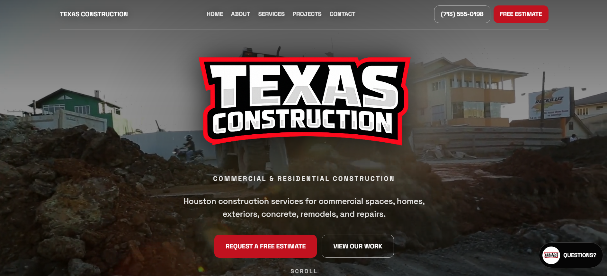

Clear service sections
Customers need to quickly see what work the business handles, whether that is construction, HVAC, roofing, landscaping, fencing, concrete, remodeling, electrical, plumbing, or repair services.
Industry Website Design
Contractors and service businesses need websites that explain what they do fast, build confidence, and make it easy for customers to request the next step. A good contractor website should not just look clean — it should help visitors understand the services, see proof, and know how to contact the business.
Clear services. Stronger trust. Easier quote requests.
The Problem
A visitor should not have to dig through a website to understand what services are offered, where the business works, or how to request an estimate. If the website is outdated, vague, hard to scan, or weak on mobile, potential customers may leave before they ever call or fill out a form.
For contractors, trust matters. Customers are often comparing multiple companies before they reach out. The website needs to show professionalism, explain the work clearly, and guide visitors toward a simple next step.
What Matters
Customers need to quickly see what work the business handles, whether that is construction, HVAC, roofing, landscaping, fencing, concrete, remodeling, electrical, plumbing, or repair services.
Buttons and contact paths should guide visitors toward requesting a quote, calling, sending a message, or viewing services without confusion.
Project photos, reviews, service areas, business details, clear explanations, and professional design all help customers feel more confident before reaching out.
Many customers search from their phone. The website needs to be easy to read, scroll, and contact from a mobile screen.
Contractor websites should clearly explain where the business works so customers and search engines can understand the local service area.
The contact form should ask for useful project details without making the process feel long, confusing, or frustrating.
SEO + AIO
A contractor website should not rely only on visuals. The page structure, headings, service descriptions, internal links, FAQ answers, and contact paths all help explain what the business does. This makes the website easier for customers to understand and easier for search engines and AI-powered search experiences to interpret. If your current website is getting visits but not enough inquiries, this guide on why a website is not getting leads explains the common friction points to review.
A contractor website should include a clear homepage, service sections, service-area information, project examples or photos, trust signals, reviews if available, strong calls to action, mobile-friendly layout, and a simple contact or quote request form.
Website structure matters because customers need fast answers. Clear headings, organized services, internal links, and visible contact paths help visitors understand the business and take action.
Website Approach
My approach is to build contractor and service-business websites around clarity first. The website should make the business easier to understand, easier to trust, and easier to contact.
Make the services easy to understand and organize them in a way customers can scan quickly.
Use strong layout, clear copy, project visuals, service details, and honest presentation to help the business look credible.
Place calls to action, contact forms, and quote paths where visitors naturally need direction.
Use clean page titles, headings, internal links, service-focused content, and structured information to help the website become easier to understand.
Website Example
The Texas Construction example shows how a contractor website can organize services, trust signals, project proof, service areas, and quote-focused calls to action into a clearer customer path.

Contractor Website Questions
A contractor website should include clear services, service areas, project photos or examples, trust signals, calls to action, mobile-friendly layout, and an easy way to request a quote or contact the business.
A Facebook page can help, but a website gives the business a more stable place to explain services, show work, organize contact information, and build trust outside of social media.
Yes. An outdated contractor website can often be improved with clearer structure, better mobile layout, stronger calls to action, updated content, and a more professional design.
A well-structured website can support local SEO by clearly explaining the services, service areas, business details, and helpful answers customers may search for. It does not guarantee rankings, but it gives search engines clearer information to understand.
The goal is to help potential customers understand the business, trust the service, and take the next step, such as calling, requesting a quote, or sending project details.
Next Step
If your website does not clearly explain your services, build trust, or guide visitors toward contacting you, it may be time to improve the structure. Send a few details about your business and what you need the website to help with.